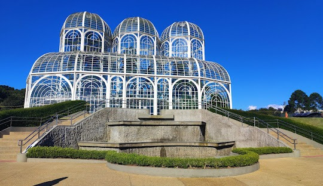
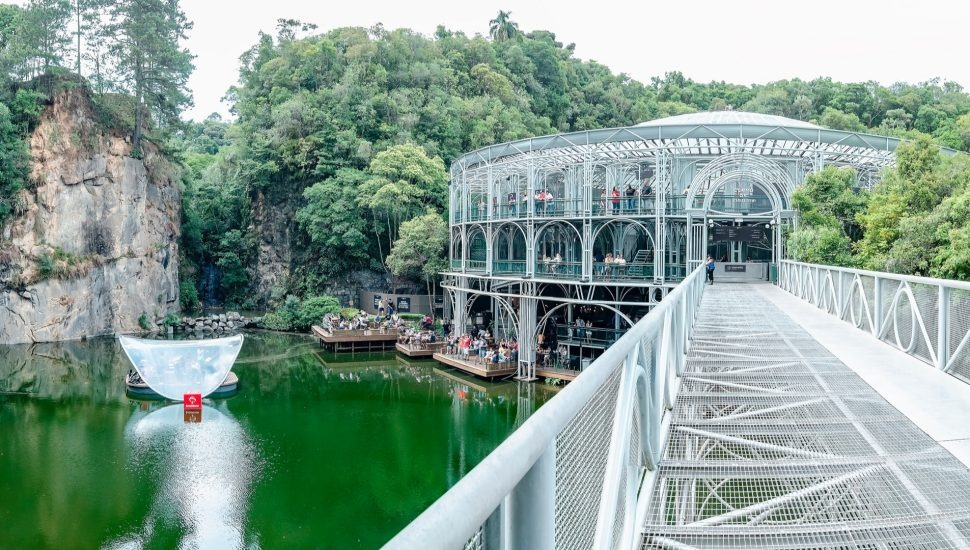
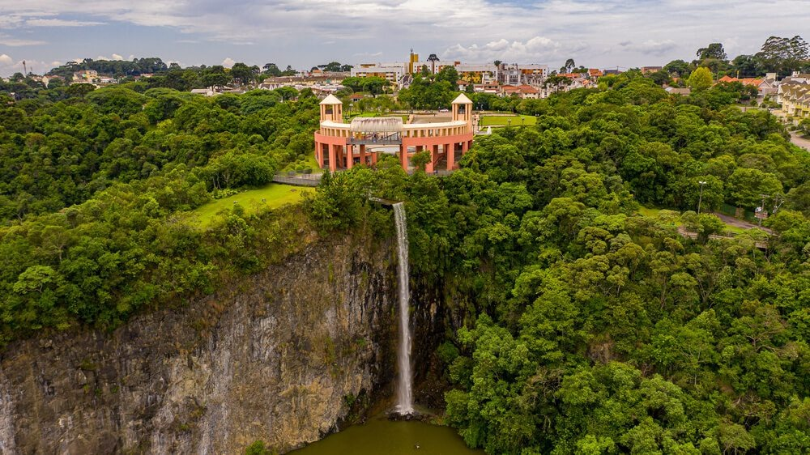

.png)
|  | Conhça o Jadim BotanicoNo coração de Curitiba, o Jardim Botânico é um verdadeiro oásis de tranquilidade e beleza natural, que encanta visitantes de todas as idades. Com sua icônica estufa de vidro, inspirada na arquitetura do século XIX, e jardins meticulosamente planejados, este espaço é mais do que um simples parque – é uma celebração da flora e da fauna brasileira. Ao passear pelos diversos caminhos do jardim, você será envolvido por uma rica variedade de plantas e flores, incluindo espécies nativas e exóticas que embelezam o ambiente. O som suave das águas dos lagos e o canto dos pássaros criam uma atmosfera perfeita para relaxar e se conectar com a natureza. O Jardim Botânico também é um centro cultural, oferecendo exposições de arte, eventos e atividades educativas que inspiram a preservação do meio ambiente. É o lugar ideal para famílias, amantes da natureza, fotógrafos e todos aqueles que buscam um momento de paz e reflexão. Venha viver a experiência única de estar em um dos mais belos cartões-postais do Brasil. O Jardim Botânico de Curitiba espera por você, pronto para encantar seus sentidos e proporcionar momentos inesquecíveis! |
|---|
Conheça a Ópera de ArameA Ópera de Arame é um dos marcos arquitetônicos mais icônicos de Curitiba e um verdadeiro espetáculo visual que combina arte, natureza e inovação. Localizada em meio a um exuberante parque, esta impressionante estrutura de aço e vidro se ergue sobre um lago cristalino, criando um cenário deslumbrante que encanta a todos que a visitam. Com sua forma única e moderna, a Ópera de Arame é um espaço dedicado à cultura e às artes, recebendo uma variedade de eventos, incluindo concertos, peças teatrais e festivais. A acústica impecável e a atmosfera envolvente fazem deste lugar um palco ideal para apresentações inesquecíveis. Ao explorar os arredores da Ópera, você encontrará trilhas e paisagens naturais que oferecem um respiro de tranquilidade, tornando a visita uma experiência completa. O contraste entre a arquitetura contemporânea e a beleza da natureza ao seu redor proporciona momentos únicos para fotos e apreciação. Seja você um amante das artes ou um curioso em busca de novas experiências, a Ópera de Arame é um destino imperdível em Curitiba. Venha se encantar com a magia deste espaço que, além de sua beleza, é um verdadeiro templo da cultura curitibana! |
 |
|---|
|  |
Conheça o Parque TanguáO Parque Tanguá é um dos tesouros naturais de Curitiba, oferecendo uma combinação perfeita de beleza, tranquilidade e atividades ao ar livre. Com suas amplas áreas verdes, lagos serenos e vistas panorâmicas de tirar o fôlego, este parque é um convite para relaxar e se reconectar com a natureza. Ao caminhar por suas trilhas bem cuidadas, você encontrará jardins floridos, cascatas e um mirante que proporciona uma vista espetacular da cidade e da natureza ao redor. O Parque Tanguá é o cenário ideal para um piquenique em família, uma caminhada revitalizante ou um momento de reflexão à beira do lago. Uma das principais atrações do parque é o tunel do tempo, um túnel construído em pedra que leva a um espaço aberto, criando um ambiente único e mágico. Além disso, o espaço é frequentemente palco de eventos culturais e atividades recreativas que enriquecem a experiência dos visitantes. Se você busca um lugar para escapar do ritmo agitado da cidade e desfrutar de momentos de paz e beleza natural, o Parque Tanguá é o destino perfeito. Venha vivenciar a harmonia entre natureza e urbanidade que faz de Curitiba uma cidade tão especial! |
|---|